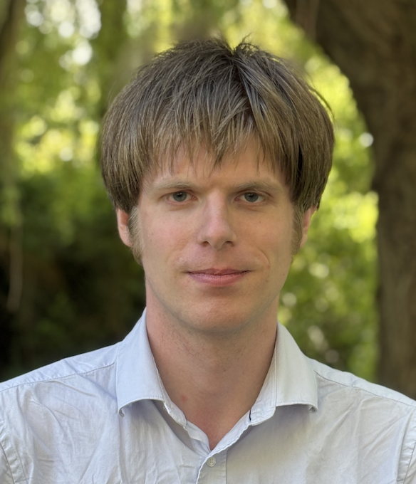

I am a postdoctoral researcher at the Eötvös Loránd University under Ambrus Kaposi in the Type Theory Group. Previously, I was working as a postdoc and lecturer at Radboud University under Herman Geuvers.
You can find more information in my CV.I am interested in Martin-Löf type theory, particularly homotopy type theory, and the applications of category theory to logic and computer science. My research also covers proof assistants and formalisation.
Keywords
I defended my dissertation, entitled Constructing Higher Inductive Types, on 8 December 2020. The manuscript can be found here.